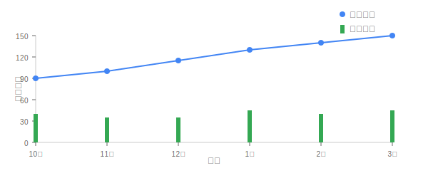
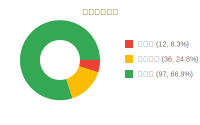

數據分析與報表中心
治療成效總覽
156
治療患者總數
↑ 12% 較上期
92.3%
患者恢復率
↑ 3.2% 較上期
4.5%
併發症發生率
↓ 1.8% 較上期
18.6
平均追蹤天數
↑ 2.3 天 較上期
症狀恢復趨勢

患者分布情況

報表管理
| # | 報表名稱 | 類型 | 數據範圍 | 上次產生 | 產生者 | 操作 |
|---|---|---|---|---|---|---|
| 1 |
甲狀腺消融治療術後恢復摘要
包含患者症狀趨勢、復原情況與治療成效
|
臨床報表 | 最近30天 | 2025/03/18 | 王大明醫師 | |
| 2 |
併發症分析報告
分析術後併發症類型、頻率與風險因素
|
研究報表 | 最近90天 | 2025/03/15 | 林芳如醫師 | |
| 3 |
患者追蹤依從性報告
分析患者APP使用情況與依從性
|
管理報表 | 最近60天 | 2025/03/10 | 張建國醫師 | |
| 4 |
治療效果比較分析
不同術式與治療方案的效果比較
|
研究報表 | 最近180天 | 2025/03/05 | 王大明醫師 | |
| 5 |
醫療團隊工作量統計
分析醫護人員工作量與效率指標
|
管理報表 | 最近30天 | 2025/03/01 | 系統管理員 |
顯示 1 至 5 筆，共 18 筆
資料分析工具
📊
族群分析
比較不同患者族群的術後恢復情況與治療效果
🔍
預測模型評估
評估AI預測模型的準確性與臨床效益
📈
趨勢分析器
分析患者症狀、數據的長期變化趨勢
研究數據匯出
匯出匿名化數據用於研究分析，支援多種常用格式。所有數據均經過去識別化處理，符合隱私保護規範。